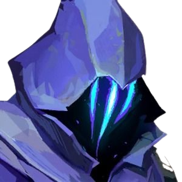
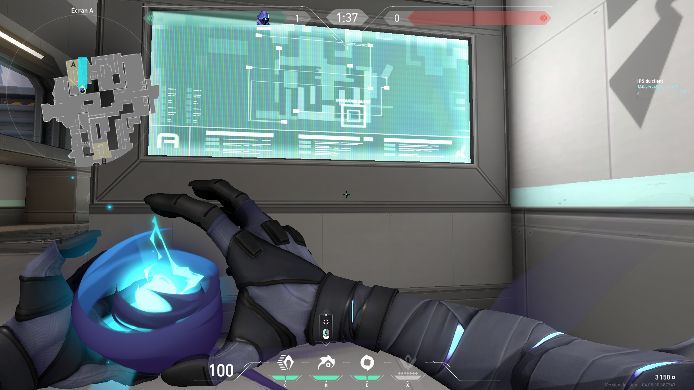
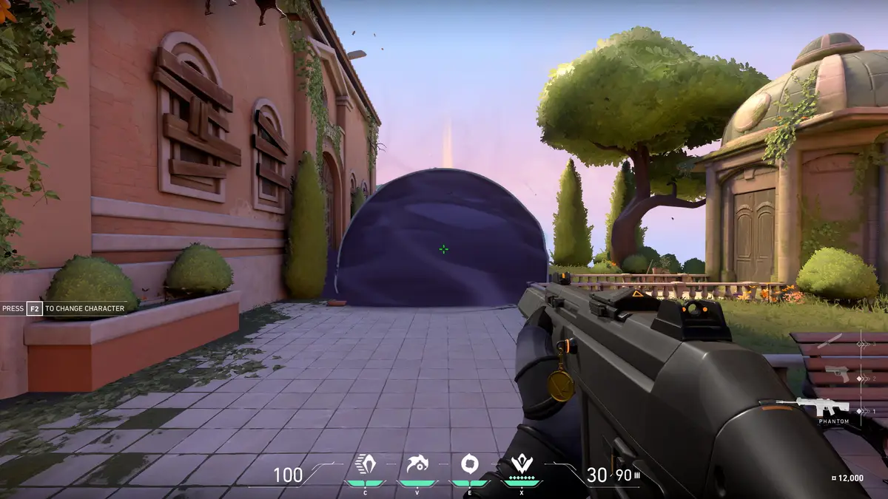
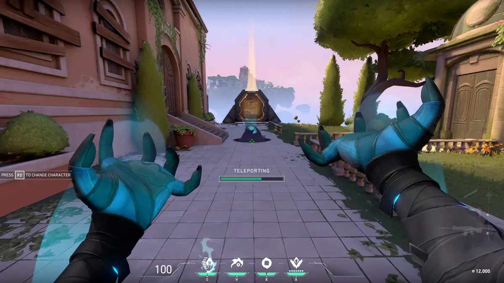

OMEN
Função: Controlador
Biografia: Uma lembrança fantasmagórica, Omen caça nas sombras. Ele cega os inimigos, teleporta-se pelo campo e deixa a paranoia tomar conta enquanto o adversário tenta descobrir de onde virá seu próximo ataque.
Habilidades
Paranoia
Q - Envia um projétil sombrio que reduz drasticamente o alcance de visão dos jogadores atingidos.
Manto Sombrio
E - Conjura uma esfera sombria que bloqueia a visão dos inimigos.
Passos Tenebrosos
C - Teleporta-se para um local marcado após um breve delay.
Salto das Sombras

X - Teleporta-se para qualquer lugar do mapa.
Dicas de Jogabilidade
- Use "Manto Sombrio" para cortar linhas de visão importantes
- "Passos Tenebrosos" é ótimo para flanquear inimigos
- Combine "Paranoia" com avanço da equipe